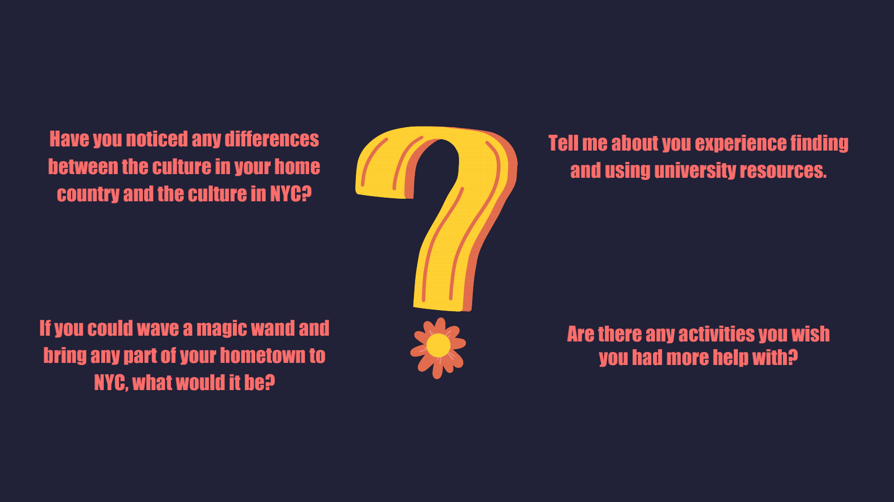
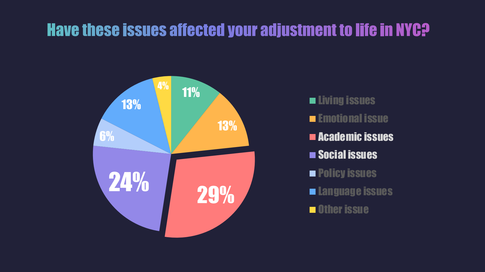
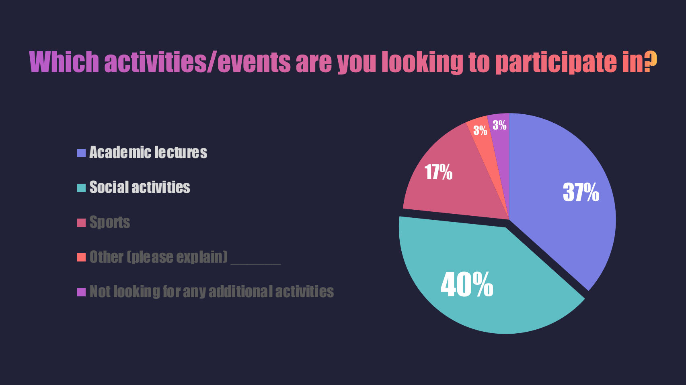
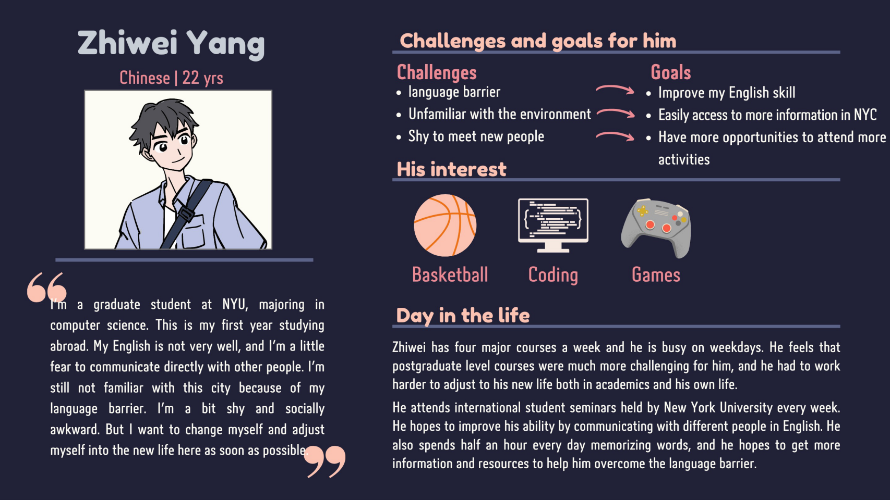
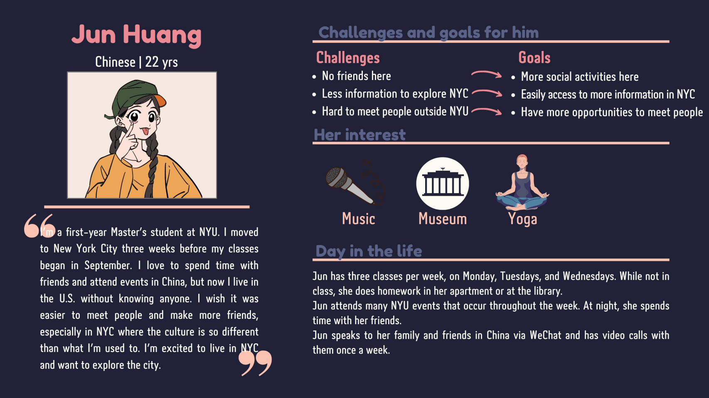
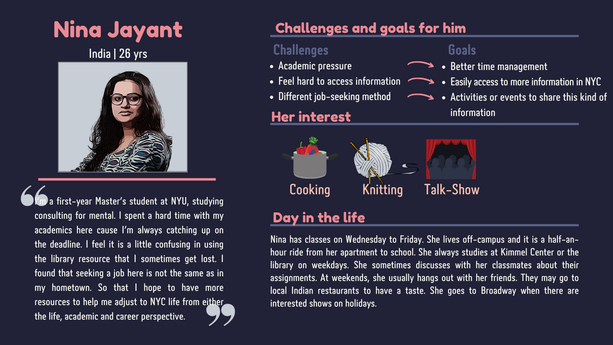

A first-year international student at NYU needs a way to access more
information about social life because they don’t have a reliable/
comprehensive place to go to help bridge the gap between their
social life in their hometown and their social life in NYC.
UX RESEARCH
Problems
As international students, we find many cultural, living, and academic difficulties when you move to a new city that is unfamiliar to you. Our team wants to dig into these inconveniences and develop reasonable solutions to help international students adjust to NYC life easier. We found the following problems that international students are facing:
International students at NYU encounter cultural differences between their home countries and the culture in New York. These may include political, language, and lifestyle differences, as well as societal norms.
International students may struggle with emotional hardships due to being away from family, friends, and their home environment.
International students need access to information/resources about school operations, transportation, housing, insurance, and general city operations.
International students struggle with making friends in a new place.
Interview Questions
We conducted 5 interviews in total
Allows our team to get a deeper understanding of the problems that international students face to better focus our user needs statement.
Directed storytelling elements of the interview allow for greater expansion of answers and unexpected insights.
Focus on the user: we developed a surplus of interview questions so we are able to ask follow-up questions as the user identifies where their needs were met/not met in their experience as an international student.

Survey
Use the insights we gained from the interviews to get more data from a broader audience.
A larger sample of data allows us to see the bigger picture of potential problems and how they affect the larger group.


Insights
Affinity Map
Cohesively organize our findings from the interviews and survey to be able to identify insights.
Insights
NYU international students have to adjust to cultural differences between their home
countries and the U.S. while also adjusting to being separated from their friends and
family.
NYU international students want more opportunities to meet people and participate in
NYC activities/events/general social life .
NYU international students are seeking these opportunities, but there is a gap in the information they have access to that will help them meet their goals.
Personas
Considering the number and proportion of questionnaires collected, we produced three personas, two from China and one from India. Through persona, we were able to give a clearer picture of the problems faced by users and their needs.



Point-Of-View Statement
A first-year international student at NYU needs a way to access more
information about social life because they don’t have a reliable/
comprehensive place to go to help bridge the gap between their
social life in their hometown and their social life in NYC.
How Might We Questions
How might we help first-year international students at NYU to make connections with
more people, including classmates, local people and students from the same country?
How might we provide a comprehensive space for first-year international NYU
students to access information about social events happening in NYC?
How might we help first-year international students find information about
representation of their culture in NYC?